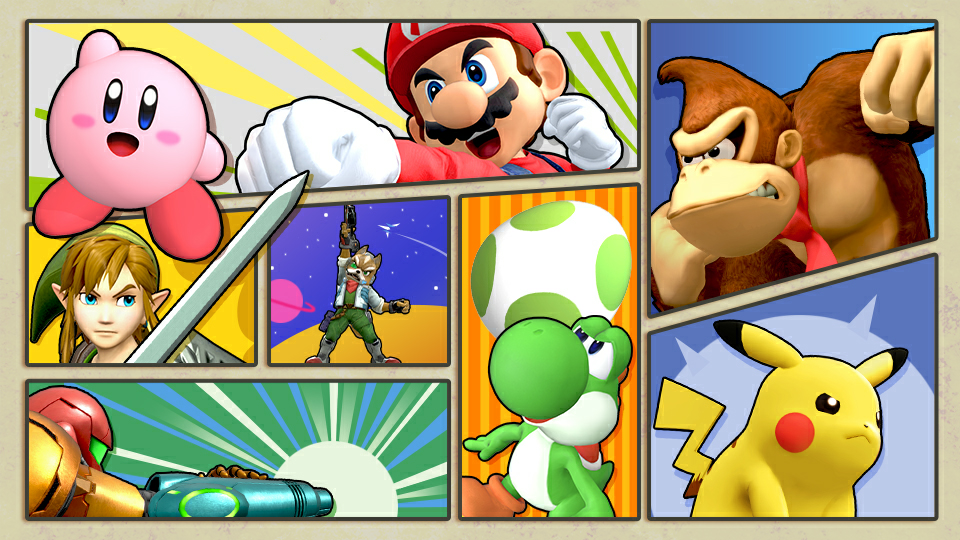
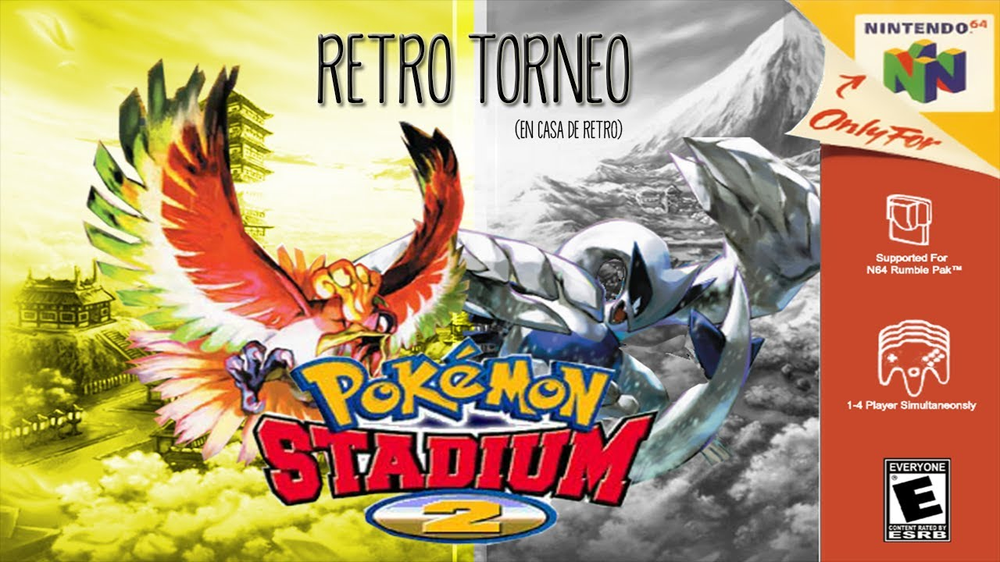
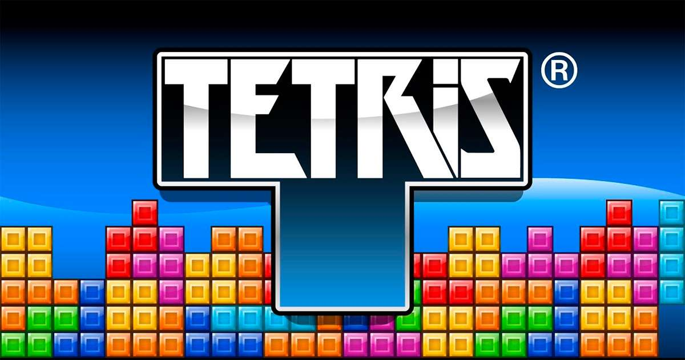
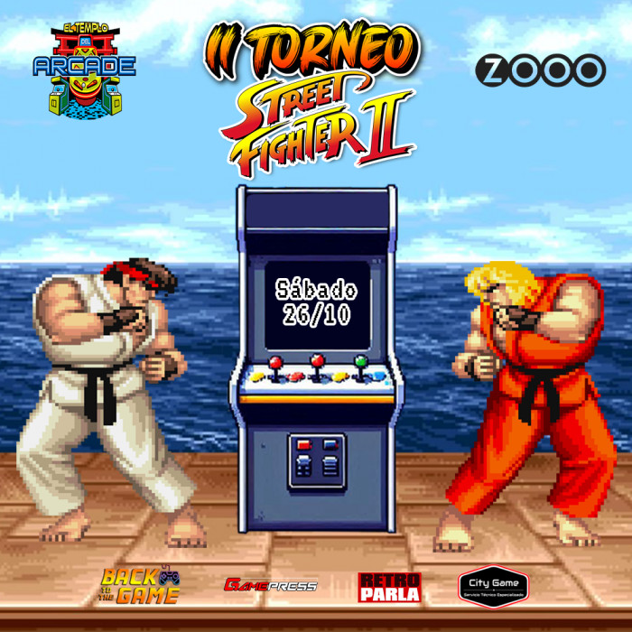

Super Smash Bros (N64)

¡El clásico de 64 bits!
Demuestra quién es el rey de la pista en este torneo oficial de Super Smash Bros para Nintendo 64. Las plazas son muy limitadas: ¡solo 32 luchadores podrán entrar en la arena! Se jugará con reglas todos contra todos (objetos, todos los escenarios, 3 vidas). Mando original proporcionado, pero te recomendamos traer el tuyo.
Mas informaciónCopa Pokémon Stadium

Prepara tu equipo
Únete a la mayor liga regional en formato clásico con hasta 64 entrenadores inscritos. Las batallas se librarán con reglas estándar (OU G2). Importante: Es indispensable traer tu propia consola (familia Game Boy) y tu cartucho original, ya que jugaremos con Cable Link físico. Se realizará una revisión de equipos antes del evento.
Mas informaciónTetris Máster Challenge

Reflejos y estrategia
Un torneo exclusivo e íntimo para los verdaderos maestros del bloque. Solo 16 participantes competirán cara a cara en el formato clásico de NES buscando la máxima puntuación y supervivencia. ¿Tienes la velocidad de reacción necesaria para dominar la pantalla cuando el nivel suba a 18?
Mas informaciónStreet Fighter II Turbo

Round 1... Fight!
Revive la era dorada de los salones recreativos. Nuestro torneo de Street Fighter II cuenta con un bracket de hasta 32 participantes en formato de doble eliminación. Jugaremos en nuestras máquinas arcade originales con sticks y botones Sanwa. Solo los mejores combos y el spacing perfecto te llevarán a la victoria.
Mas información